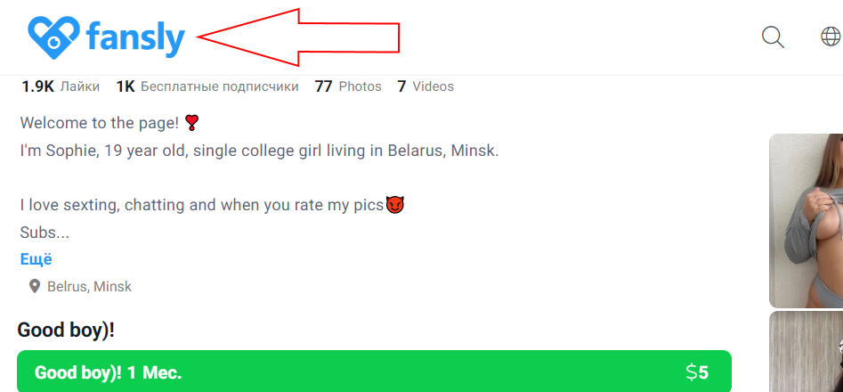
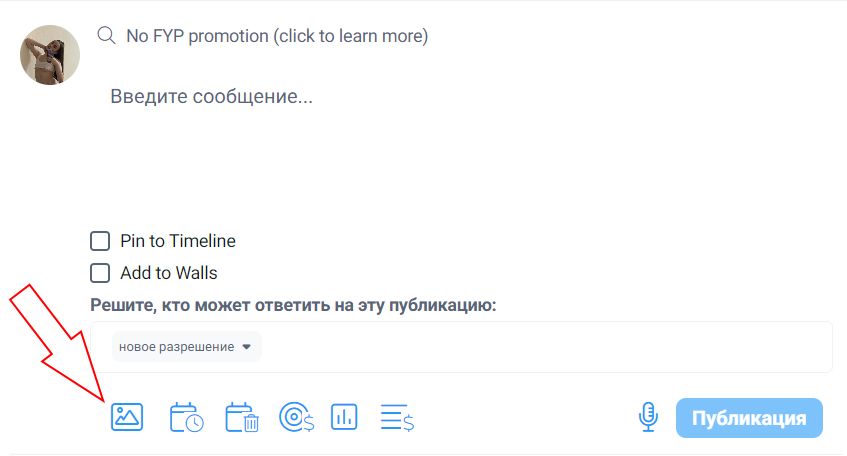

Нажимаем на значок "Fansly"
Затем нажимаем на указанную стрелочкой кнопочку
Добавляем “permission” – ставим либо “add price” (то есть за указанную вами цену любой желающий может приобрести фото), либо “subscribed”. Subscribers -это платные подписчики. Публикация может быть сделана либо для тех, кто приобрел любой из видов платной подписки, либо для владельцев конкретного вида платной подписки. На фото указано “All tires”, это значит, что публикация будет доступна владельцам любой категории платной подписки.